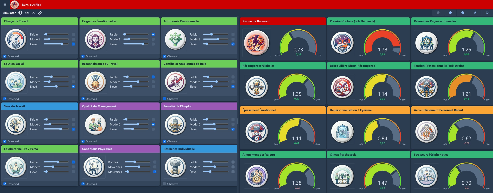

Le problème : un savoir ancien, des décisions toujours difficiles
Karasek (1979) et son modèle demande-contrôle, Maslach (1981) et la mesure de l'épuisement, puis des centaines de méta-analyses : les facteurs du burn-out sont connus. Ce qui manque, ce n'est pas le savoir — c'est de savoir quoi en faire dans un contexte contraint.
Car le levier le plus corrélé au risque n'est pas toujours celui sur lequel on peut agir. Réduire la charge de travail est souvent le facteur n°1… et parfois le moins réaliste à court terme. La vraie question n'est pas « quelle est la cause principale ? » mais « parmi les actions à ma portée, laquelle déplace le plus le risque ? »
Le cerveau humain identifie bien les causes, mais estime mal leurs effets cumulés. Un réseau bayésien structure exactement ce que l'intuition peine à faire : hiérarchiser des actions possibles sous contrainte.
Le modèle : le burn-out comme système, pas comme somme de causes
Une forte charge de travail n'entraîne pas mécaniquement un burn-out. Pas si la reconnaissance compense, pas si le soutien social est présent, pas si le travail garde du sens. À l'inverse, des contraintes modérées peuvent suffire quand plusieurs déséquilibres s'alignent. Le modèle représente ces interactions — charge de travail, autonomie décisionnelle, soutien social, reconnaissance, management, stresseurs périphériques — et la façon dont elles convergent vers l'épuisement émotionnel puis le risque de burn-out.
Concrètement : 12 facteurs observables par questionnaire — charge, exigences émotionnelles, autonomie, soutien social, reconnaissance, conflits de rôle, sécurité de l'emploi, sens du travail, équilibre de vie… — alimentent des variables latentes (pression, ressources, déséquilibre effort-récompense, tension professionnelle) puis les trois dimensions du burn-out — épuisement émotionnel, cynisme / dépersonnalisation, accomplissement réduit — qui convergent vers le risque de burn-out. Chaque nœud a au plus deux parents ; le résultat n'est pas un score unique et rigide, mais une carte des interactions.
Les probabilités du réseau sont établies à partir de la littérature scientifique et de méta-analyses, puis calibrées par expertise — elles ne sont pas apprises sur des données d'entreprise. Les ordres de grandeur sont cohérents avec la recherche ; en mission, la même structure serait affinée sur vos propres données.

Les nœuds sont les facteurs (charge, autonomie, soutien, reconnaissance…) et les résultats (épuisement émotionnel, risque de burn-out). Les flèches se lisent « A influence B » : une hypothèse d'influence issue de la littérature, pas une preuve de causalité expérimentale.
L'essentiel se joue dans les chemins qui convergent. Plusieurs facteurs alimentent l'épuisement émotionnel, qui alimente à son tour le risque. Quand le facteur dominant est hors de portée, agir sur plusieurs facteurs accessibles — même « secondaires » — permet d'infléchir ce nœud central de façon utile, à défaut d'être spectaculaire.
Un exemple : agir sur les leviers accessibles, pas sur les plus forts
Prenons une équipe d'aides-soignants sous tension : charge de travail élevée, fortes exigences émotionnelles, conditions dégradées. Le modèle estime un risque de burn-out élevé — 0,89. Problème : les deux facteurs les plus corrélés au burn-out — la charge et les exigences émotionnelles — sont justement les plus difficiles à actionner. On ne recrute pas des soignants du jour au lendemain, et on ne supprime pas la charge émotionnelle du soin.
Que reste-t-il ? Agir sur les ressources, celles qui sont à portée : autonomie décisionnelle, soutien social, reconnaissance, qualité du management, sens du travail. On simule ce plan sans toucher à la pression — elle reste à 1,78.
Situation initiale
Ouvrir le simulateurAprès actions ciblées sur les ressources
Ouvrir le simulateur
Des hypothèses très prudentes sur l'effet de chaque levier en ciblant uniquement les ressources accessibles nous permettent d'estimer l'impact d'un plan réaliste sur cette équipe. On peut ensuite tester d'autres plans, plus ambitieux, plus radicaux, ou au contraire plus conservateurs, et comparer les résultats pour prendre une décision éclairée ou défendre une intuition devant un comité de direction.
Valeurs issues d'une simulation de démonstration sur un cas illustratif. Un modèle réel produirait ses propres estimations sur vos données.
Le simulateur : tout le réseau réagit, en direct
Chaque curseur déplacé recalcule instantanément l'ensemble des indicateurs — risque de burn-out, épuisement émotionnel, cynisme, tension professionnelle. On lit moins une valeur absolue qu'un écart entre deux scénarios comparés sur la même base, sans compétence technique requise.

On ne lit pas « 0,73 » comme une prédiction certaine, mais comme un repère de comparaison. Ce qui compte, c'est l'écart entre deux scénarios évalués sur la même base, et la manière dont il s'explique par les leviers activés.
Un plan de prévention crée de la valeur en évitant des situations : quand il fonctionne, « rien » ne se passe. Le simulateur donne un langage pour défendre ce non-événement — le coût du statu quo, et l'effet attendu d'une action, rendus visibles.
Explorer ce modèle
Graphe et simulateur construits uniquement à partir de la littérature scientifique. Les valeurs affichées servent la démonstration ; un modèle sur-mesure intégrerait ensuite vos données et l'expertise de vos équipes.
Fondements scientifiques
La structure du réseau et l'orientation de chaque relation reposent sur cinq cadres théoriques majeurs du burn-out et sur des méta-analyses publiées :
- Bakker & Demerouti (2007) — modèle Job Demands-Resources (JD-R) : les exigences alimentent l'épuisement, les ressources le tamponnent.
- Karasek & Theorell (1990) — demande-contrôle-soutien : l'iso-strain (forte demande + faible contrôle + faible soutien) est la combinaison la plus pathogène.
- Siegrist (1996) — déséquilibre effort-récompense (ERI), facteur de risque indépendant (OR 2,5-6,0).
- Maslach & Jackson (1981) — Maslach Burnout Inventory : séquence épuisement → cynisme → perte d'accomplissement.
- Schaufeli et al. (2020) — Burnout Assessment Tool (BAT) : épuisement et distance mentale forment le noyau du syndrome.
- Alarcon (2011) — méta-analyse : charge → épuisement (r ≈ 0,50), conflits de rôle → cynisme (r ≈ 0,38).
- Greenhaus & Beutell (1985) — conflit travail / vie personnelle et récupération.
- Sonnentag — travaux sur la récupération (recovery) après le travail.
En toute transparence, ce modèle a ses limites : il est statique — les spirales de perte de ressources (Hobfoll, théorie COR) ne sont pas représentées — et il modélise des mécanismes, pas des profils démographiques. La page Méthode détaille la construction, le paramétrage et les limites de ce type de modèle. Les articles reprennent chaque mécanisme séparément, source par source.
Ce réseau ressemble à votre situation ?
Décrivez-la en quelques lignes — le phénomène que vous cherchez à comprendre, les données dont vous disposez, la décision qui est en jeu. Je vous dis si c'est modélisable, et si ça ne l'est pas, pourquoi.
Réponse sous 48 h ouvrées · sans engagement · NDA possible